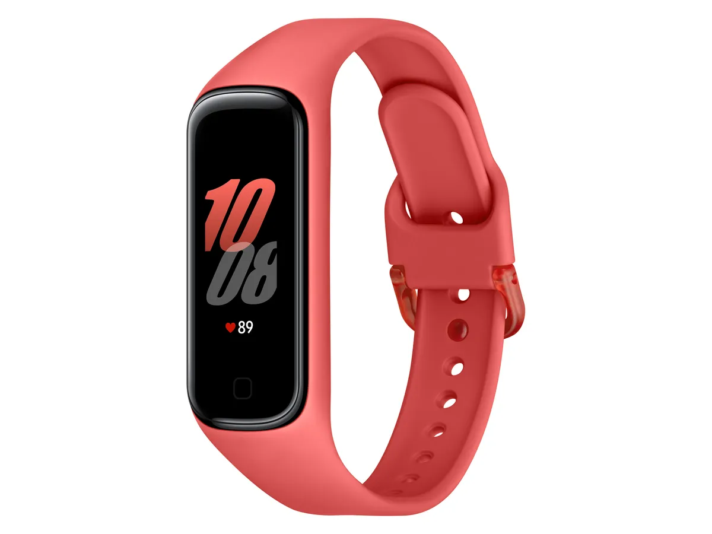

Samsung Fitness Band & Activity Tracker
Stay Fit.
Stay Connected.
The Samsung Galaxy Fit 2 is a lightweight, stylish fitness band with automatic workout detection, 24/7 heart rate monitoring, sleep tracking, 15-day battery life, and seamless Samsung Galaxy integration — managed through the Samsung Health app.

What is the Samsung Galaxy Fit 2?
Samsung's Compact All-Day Activity Tracker
The Samsung Galaxy Fit 2 is a slim, comfortable fitness band designed to track your daily activity and wellness with ease. It features a 1.1-inch color AMOLED display, automatic exercise detection, 24/7 heart rate monitoring, comprehensive sleep tracking, step and calorie counting, water intake logging, call and message notifications, IP68 water resistance, and up to 15 days of battery life, all integrated with the Samsung Health app for a seamless health tracking experience, especially on Galaxy smartphones.
How To Use
Get Started with Samsung Galaxy Fit 2 in 6 Simple Steps
Install Galaxy Wearable & Samsung Health
Download the Galaxy Wearable app and Samsung Health app on your Android phone. Both apps are required to fully set up and use the Galaxy Fit 2.
Pair via Bluetooth
Open Galaxy Wearable, tap "Start," and select Galaxy Fit 2 from the device list. Follow the Bluetooth pairing prompts to connect the band to your smartphone.
Set Up Your Health Profile
Enter your personal details, age, height, weight, and daily step goal, in Samsung Health so the Galaxy Fit 2 can calculate accurate calorie and activity data.
Enable Notifications & Features
In Galaxy Wearable, turn on call and text notifications, set up app alerts, configure sleep tracking, and customize which data appears on the band's display.
Let It Auto-Detect Your Workouts
Wear the Galaxy Fit 2 during any physical activity, it automatically detects and records exercises like walking, running, and elliptical workouts without any manual input needed.
Review Health Data in Samsung Health
Open Samsung Health to view your step count, calories burned, heart rate history, sleep patterns, workout logs, and daily wellness summaries in a clean, organized dashboard.
VIDEO TUTORIAL
See Samsung Galaxy Fit 2 in Action
Benefits
Why Users Choose the Samsung Galaxy Fit 2
Automatic Exercise Detection
The Galaxy Fit 2 recognizes and starts recording your workouts automatically, no need to manually log your run, walk, or elliptical session.
Seamless Samsung Integration
Pairs perfectly with Galaxy smartphones for call and message notifications, quick replies, and full Samsung Health ecosystem integration.
Lightweight & Long-Lasting
Weighing just 21g with up to 15 days of battery life, the Galaxy Fit 2 is comfortable enough to wear around the clock without feeling bulky or needing frequent charging.